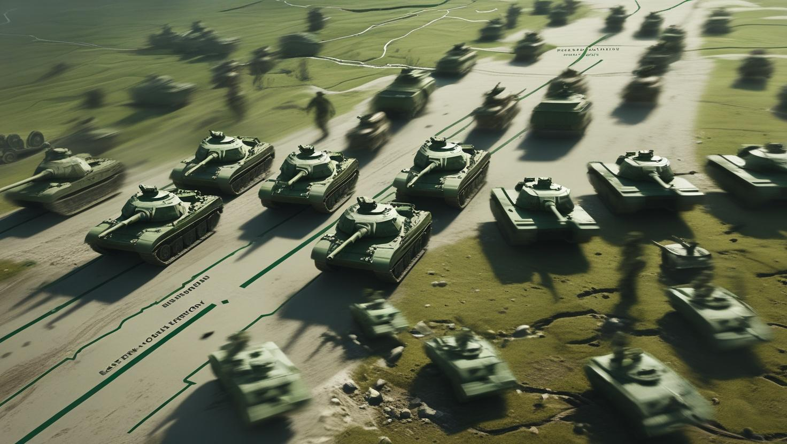
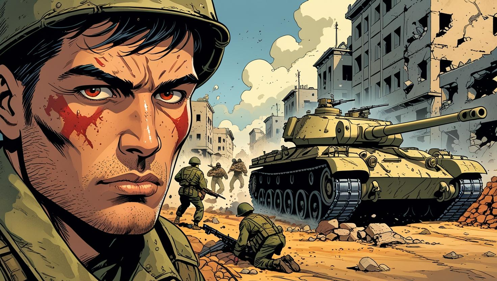
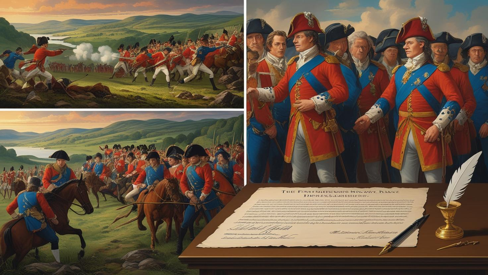
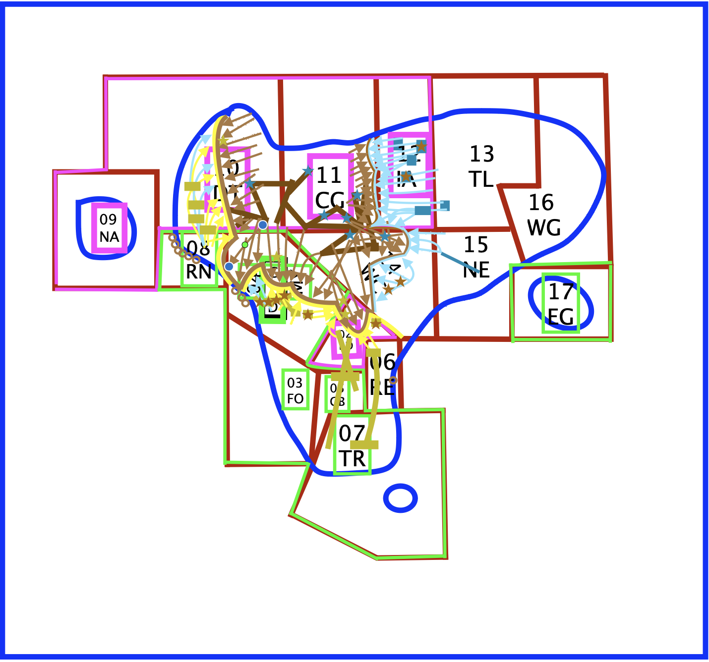

The Fracturing of Unity – Outbreak of the Three Lardish War
Following the formal establishment of the Republic in 2022, a period discussed in Chapter 6, the King, despite his diminished formal control, and each of the newly formed republics—the Federal, Sovereign, and Royal—asserted their individual claims of legitimacy over the entire territory of the USFLR. Amidst this delicate political landscape, the Federal Republic earned crucial international recognition, positioning itself as the designated mediator and the de jure legitimate governing body. While all three republics outwardly pledged to maintain peace until a joint resolution could be reached, this fragile unity within the Lardish Republic ultimately shattered in early 2023. Tensions between the three primary governing blocs—the Federal Republic, the Sovereign Lardish Republic, and the Royal Lardish Republic—escalated rapidly, reaching a critical boiling point. Pre-existing ideological rifts, unresolved territorial disputes, and conspicuous military posturing quickly metastasized into full-scale war within a mere matter of days.
The conflict officially ignited on March 1st. Sovereign forces initiated hostilities by crossing into southern Barld, a state that had firmly aligned itself with the Royal faction. This incursion immediately provoked a fierce retaliation from Royal forces, who launched their own offensives into the territories of Rouon and Molty. Notably, Royal military units made extensive and strategic use of Eastern-Colish territory for staging their operations, further complicating the already volatile situation. While local inhabitants in the affected areas consistently claimed that Sovereign units had fired the initial shots, no definitive evidence was ever subsequently produced to substantiate these allegations. This enduring mystery continues to be a subject of considerable debate and speculation within Lardish historical circles. By March 2nd, 2023, the Sovereign Government had issued a formal declaration of war. Within a mere 24 hours of this declaration, Sovereign forces had successfully seized control of more than half of Barldi territory, marking a swift and decisive early gain. In immediate response to this rapid advance, the Royal Prime Minister issued a direct order for the general mobilization of all troops, simultaneously greenlighting incursions into Northeast Molty and the strategically vital Central Lardish District (CLD), with their forces moving through the state of Nuepia. Facing escalating pressure from these Royal counter-offensives, the Sovereign government found it necessary to temporarily relocate its central command operations to Montrain, Molty. By the following day, March 3rd, Royal forces had advanced deep into the Central Lardish District (CLD) and successfully occupied the entirety of Rouon, signaling a rapid shift in tactical advantage.
The War's Intensification and Finalization
On that same pivotal day, March 3rd, President Lard Lapudding formally invoked Article 17 of the Constitution. This act granted the Federal Army emergency authority to launch operations aimed specifically at retaking Royal-occupied Eastern-Colish lands. Concurrently, urgent warnings were disseminated for all foreign nationals present in the country to immediately evacuate, signaling the escalating severity of the conflict. The battle for Eastern-Col territory intensified dramatically. Royal troops rapidly deployed their Royal Special Forces units in an attempt to consolidate and hold the contested region, an action that triggered a violent and decisive backlash from combined Sovereign and Federal units. In a remarkably swift counteroffensive, lasting less than 12 hours, these combined forces successfully regained significant ground within the Central Lardish District (CLD). However, this brief momentum was soon offset. The Federal Army suffered a considerable setback with the definitive failure of its "Liberation of the Eastern-Colish Territory" operation on March 5th. In the immediate aftermath of this tactical defeat, Royal command redirected their formidable 179th Division to bolster the northeastern Molty front, a strategic redeployment that inadvertently enabled Federal troops to successfully capture the City of Esthalin.
By March 6th, a new, unexpected front had opened in Eastern Tutitacol, where Federal troops encountered surprisingly weak initial resistance, hinting at a potential breakthrough. Yet, the fickle tide of war soon turned again. Royal forces surged forward with renewed vigor in the CLD, successfully capturing its entire northern half, while the Eastern-Col front settled into a tense and stagnant theater of operations, characterized by limited movement and entrenched positions. With momentum shifting unpredictably on a daily basis, March 7th saw President Lard Lapudding issue a critical order for a full Sovereign mobilization. This influx of reinforcements was aimed at bolstering the faltering fronts in Molty and the CLD. The subsequent Sovereign counteroffensive proved effective, pushing Royal forces out of several key areas and effectively stabilizing what had previously been a rapidly collapsing front line. With battle lines barely shifting after a week of brutal, high-intensity combat, external news coverage of the conflict gradually slowed. However, behind the scenes, military tactics continued to intensify and evolve. On March 14th, a bold blitzkrieg campaign, executed jointly by Sovereign and Federal forces, successfully liberated much of the CLD and initiated a daring northern corridor maneuver, strategically aimed at encircling the remaining Royal forces. Then, on March 19th, the Royals launched a powerful counterstrike. In a stunning surprise move, they successfully closed the Sovereign East Corridor and reclaimed a significant portion of northern Barld. Concurrently, the CLD endured heavy shelling, with more than half of its vital infrastructure left in devastating ruins. This marked the Royals’ final significant territorial gain of the war, a last gasp of effective offensive capability. A weary and battered nation ultimately witnessed the war grind to a definitive halt on March 20th, when all three republics reluctantly agreed to a verbal ceasefire. The following day, March 21st, 2023, the war formally concluded with the signing of a three-party peace treaty, bringing an official end to the short but devastating conflict. Though brief in duration, the Three Lardish War had left thousands of citizens displaced and rendered entire regions in political and physical ruins, forever scarred by the fighting. What began as mere border skirmishes had tragically escalated into a brutal, three-way clash that irrevocably shattered the fragile illusion of unity within the Lardish Republic. The Three Lardish War would forever be etched into the national memory as a profound turning point—not merely in military terms, but fundamentally in the collective psyche of the Lardish people.
Here is a link to an official Sovereign document showing the timeline of the Three Lardish War. Keep in mind that this document may not contain objective information and/or inaccurate data.